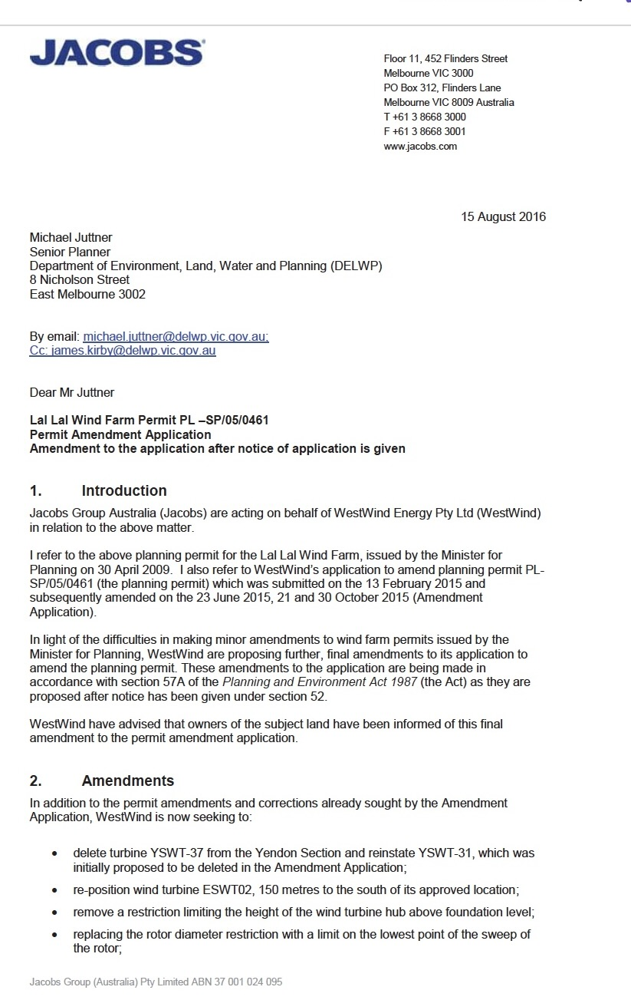
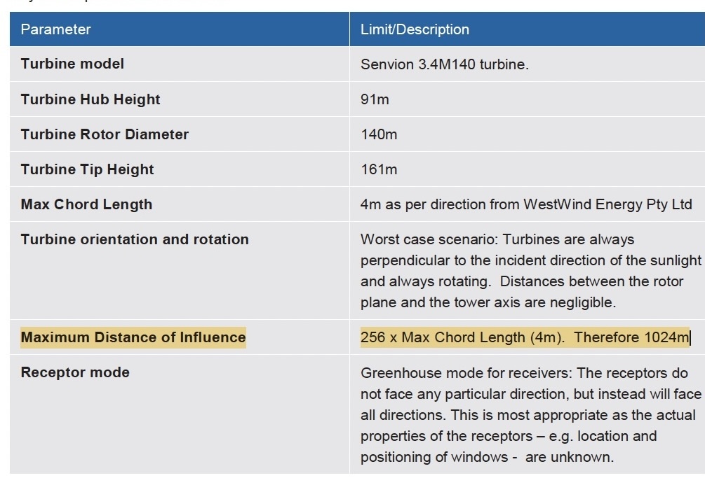
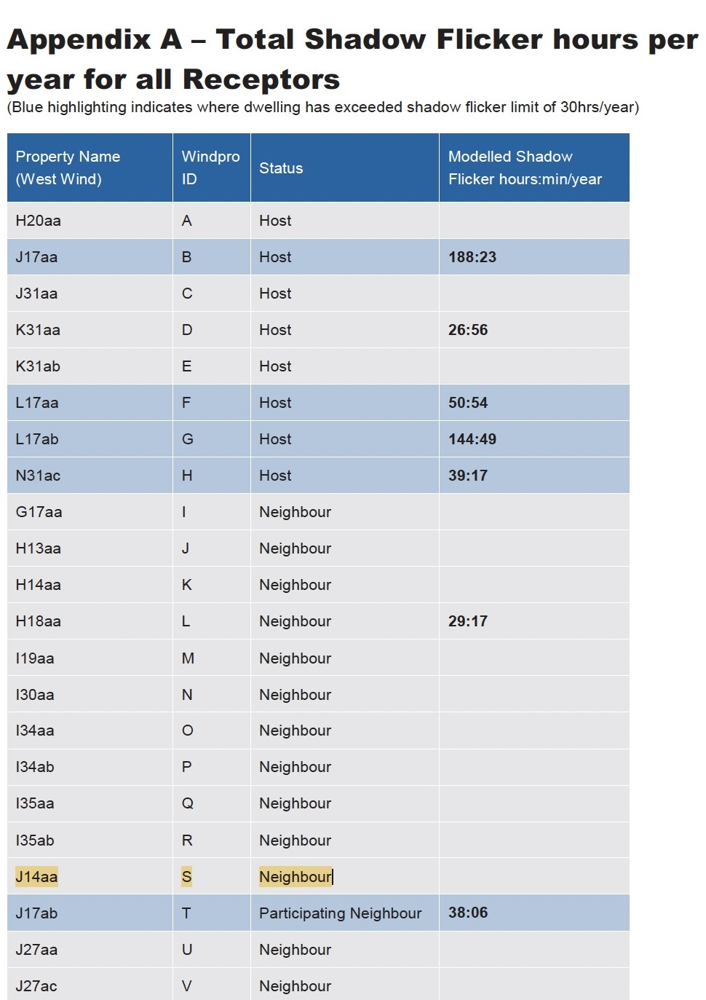
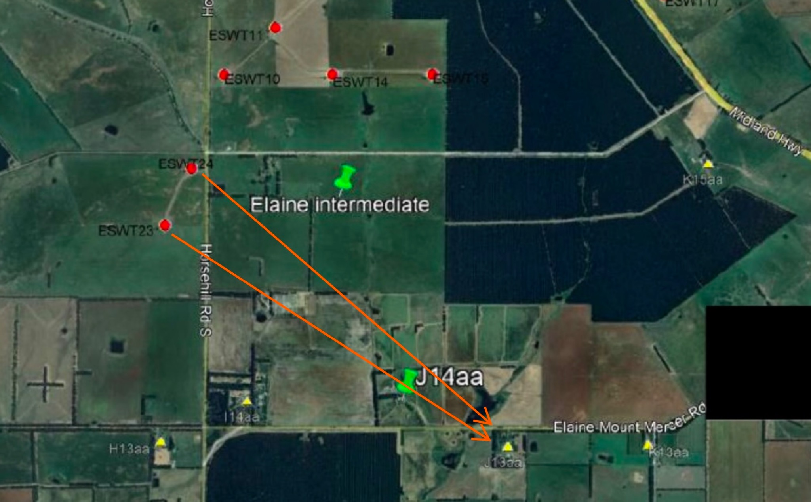
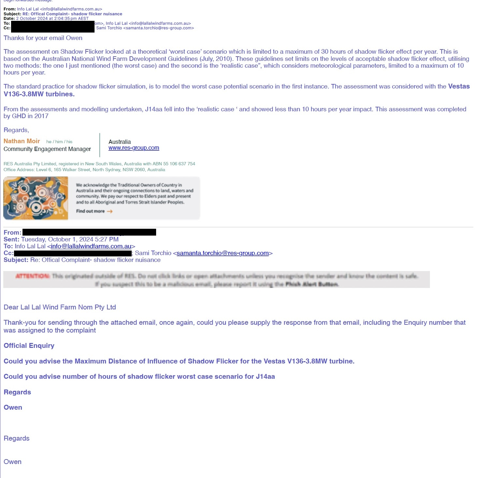
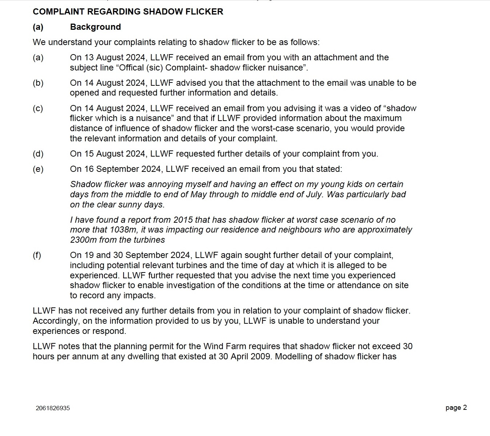
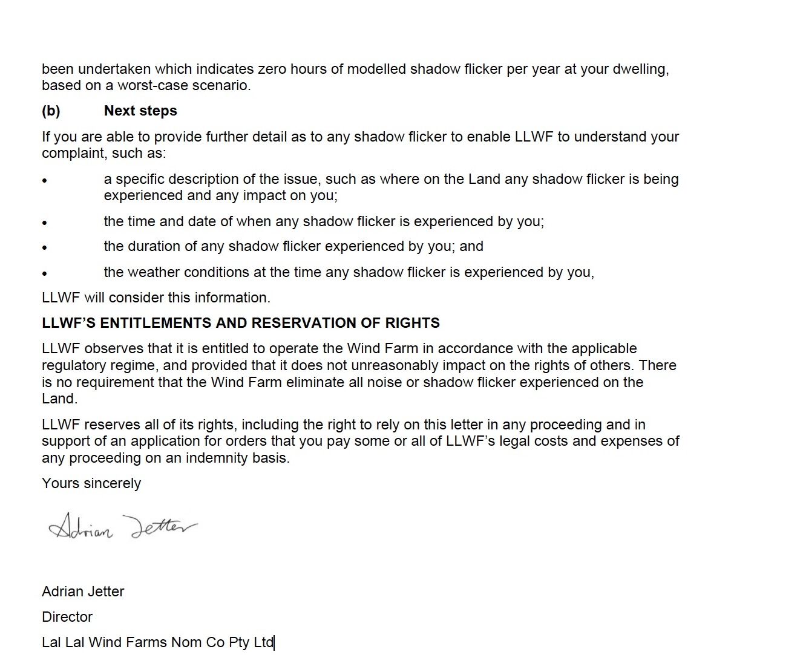

Shadow Flicker
This page presents the available planning, visual, operational and administrative record concerning shadow flicker associated with the Lal Lal Wind Farm. It distinguishes the assessment record, observations, operator responses, incident correspondence and later Trustee enquiries.
Documentary chronology
The material is presented in the order in which the record developed.
Permit-amendment and assessment record
The selected extracts provide context without publishing the complete 127-page report.



Planning permit requirement
The 2016 amendment material records proposed Condition 21 as requiring shadow flicker not to exceed 30 hours per annum at any dwelling existing at the date of the permit, subject to any documented exemption agreement.
The assessment material also records that ESWT02 was proposed to be repositioned after an earlier predicted exceedance at H18aa.
J13aa, J14aa and nearby turbines
The map identifies the location of the 2024 video record and its relationship to J14aa.

Beneficiary video record
The recording is presented as one of several items of footage supplied by the Beneficiary. An exact recording date is not assigned on this page unless independently fixed by the documentary record.
Operator responses recorded during 2024
The redacted source extract is published alongside a neutral summary of the operator's recorded modelling explanation.
2 October 2024 email response
The operator advised that the assessment considered a theoretical “worst case” scenario and a meteorologically informed “realistic case”, referred to Vestas V136-3.8MW turbines, and stated that J14aa showed less than 10 hours per year under the “realistic case”, referring to a GHD assessment completed in 2017.
The Beneficiary had requested the maximum distance of influence for that turbine model and the worst-case hours for J14aa.
Source status
The extract reproduced below is the redacted version supplied for publication. The earlier unredacted email file is not included in this deployment package.
The page presents the operator's wording as part of the historical administrative record and does not adopt the modelling statement as an independent finding.

Later 2024 written response


Modelling of shadow flicker has been undertaken which indicates zero hours of modelled shadow flicker per year at your dwelling, based on a worst-case scenario.
The page records this as LLWF’s formal position. It is presented alongside, but does not attempt to reconcile, the separate 2 October 2024 email statement concerning less than 10 hours per year under a “realistic case”.
2025 incident correspondence
On 23 June 2025, LLWF issued reference LLWF-ELA-23062025.1, advised that satellite imagery for the reported date and time had been reviewed, and stated that recorded evidence showing shadow flicker from the residence would assist its response.
J14aa observations reported in 2026
The correspondence records specific dates, approximate times and durations, and requests that the observations be entered into the incident and complaints register.
| Date observed | Approximate time and record |
|---|---|
| 27 June 2026 | Observed from approximately 4:38 pm and gradually weakened from approximately 4:53 pm. |
| 30 June 2026 | First noticed at approximately 4:45 pm under partly cloudy conditions and gradually diminished. |
| 12 July 2026 | Became apparent at approximately 4:58 pm and gradually diminished. |
| 17 and 18 July 2026 | On each occasion became apparent shortly before 5:00 pm and continued for approximately 10–15 minutes before gradually diminishing. |
Clarification requested on 26 July 2026
The Trustee sought clarification after receiving the Beneficiary’s compilation and advice that acknowledgements or responses had not been received for the June–July 2026 notifications.
Clarification sought
- whether the correspondence had been received;
- whether it had been entered into the Complaints Register;
- how it had been categorised;
- whether acknowledgements had been issued;
- whether assessment or investigation had commenced; and
- its present administrative status.
Present documentary position
As at the date of this release, the material provided for this page does not include a substantive response from LLWF to the Trustee’s 26 July 2026 clarification request, nor an acknowledgement or response addressing the individual June–July 2026 observation notifications.
This records the available documentary position only. Later substantive material will be incorporated if identified.
What the available record presently shows
Assessment record
J14aa was included as a neighbour receptor in the assessment extract. The operator later recorded different descriptions of the modelled position: less than 10 hours per year under a “realistic case” and zero hours under a worst-case scenario.
Observation record
The record contains Beneficiary video footage at J13aa, a 2025 registered incident, and contemporaneous 2026 reports at J14aa.
Administrative status
The available material records earlier operator engagement but does not include a substantive response to the Trustee’s July 2026 clarification request or to the individual 2026 notifications.